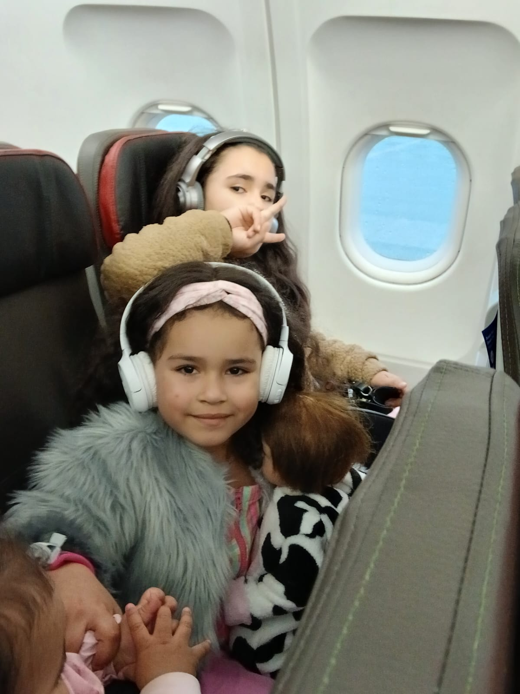
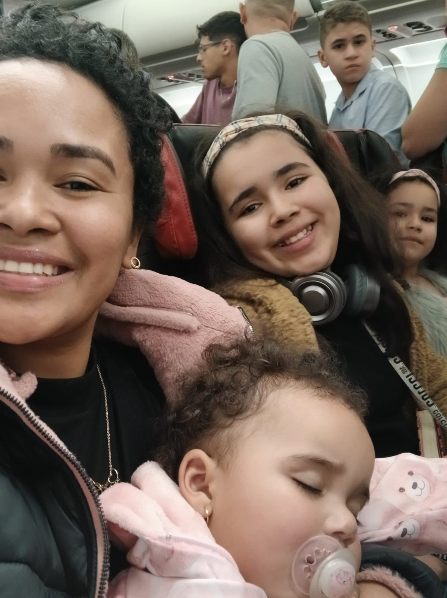
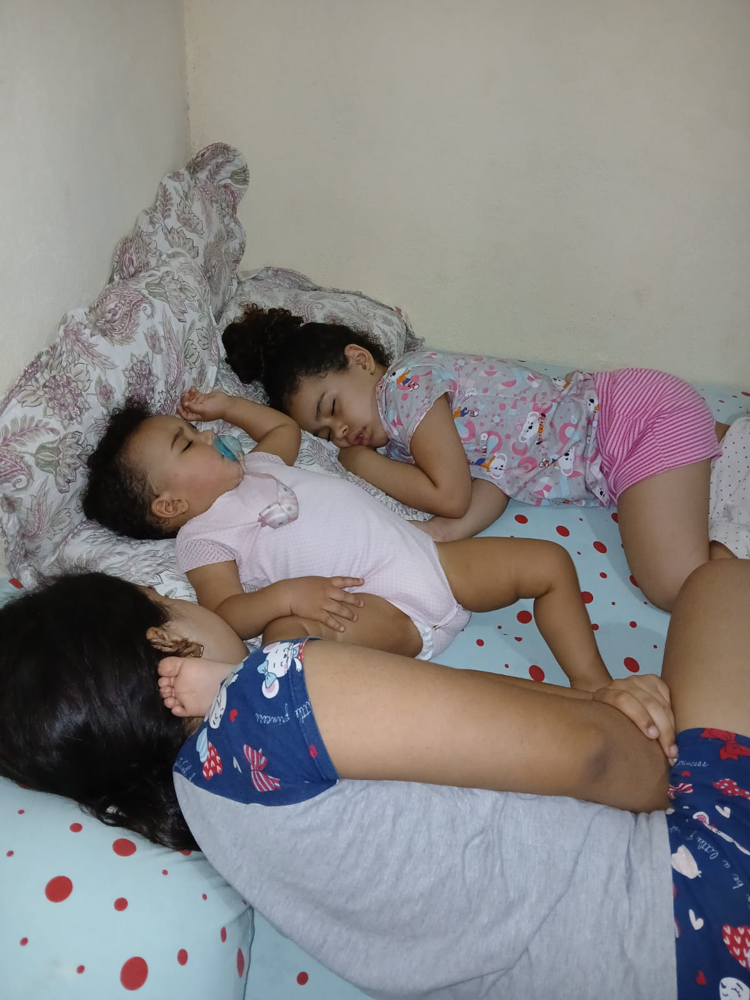
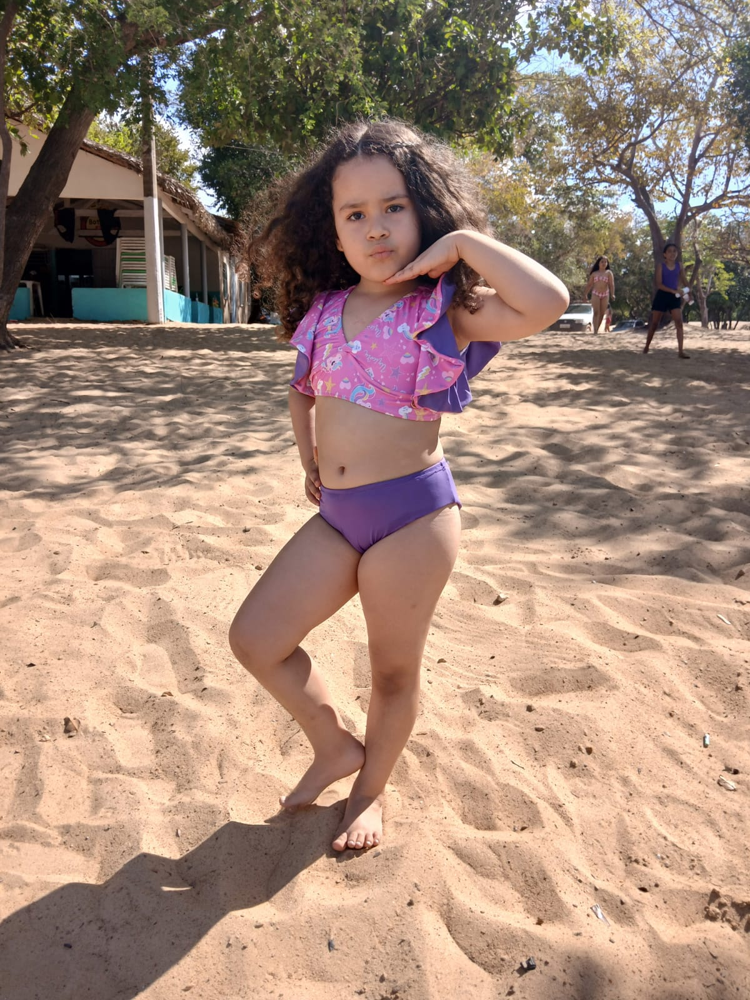
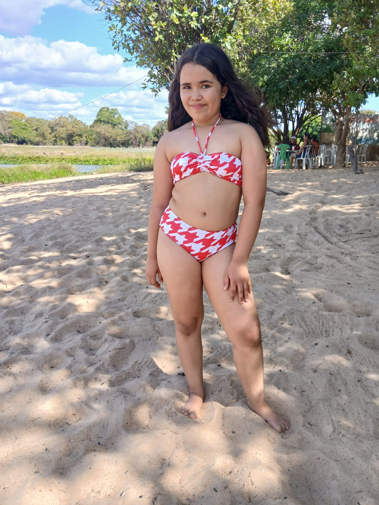
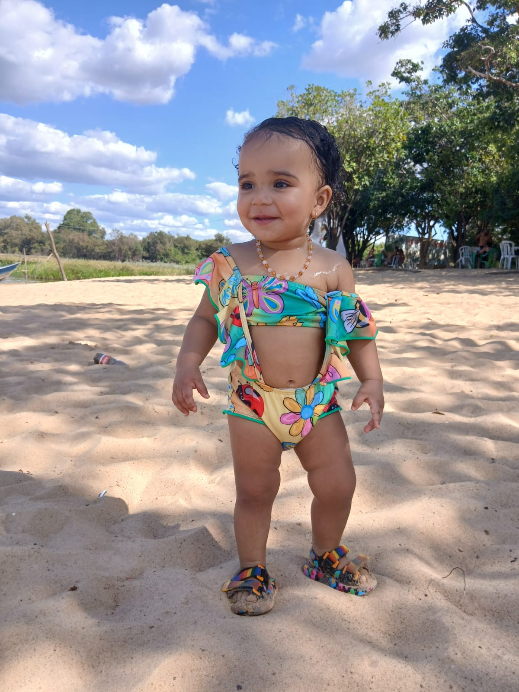
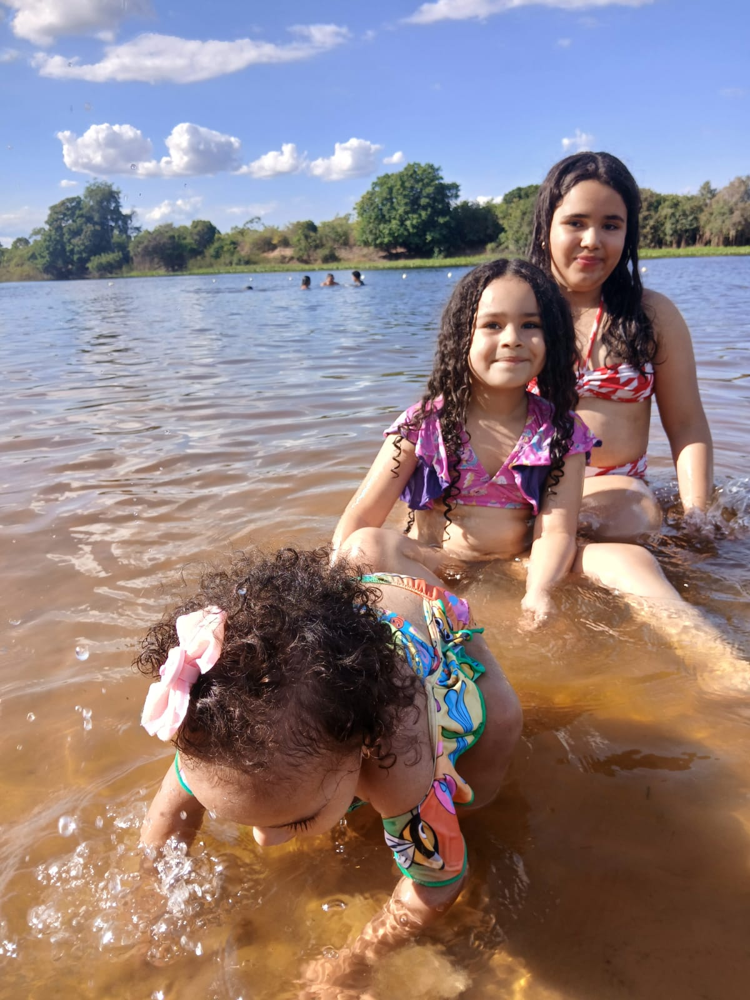
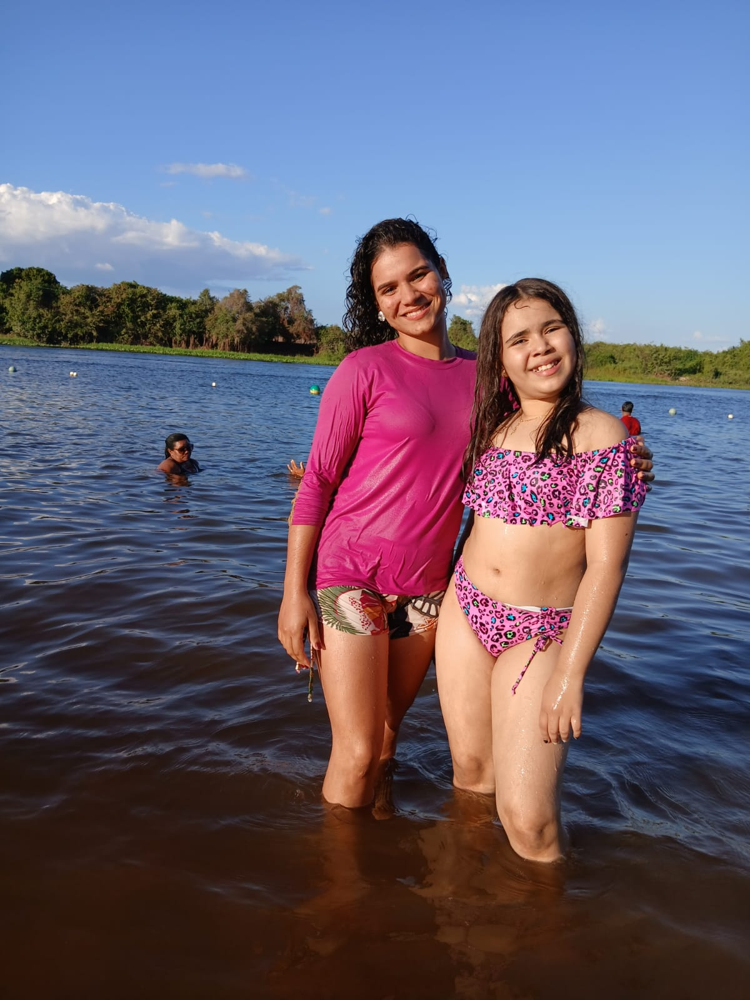
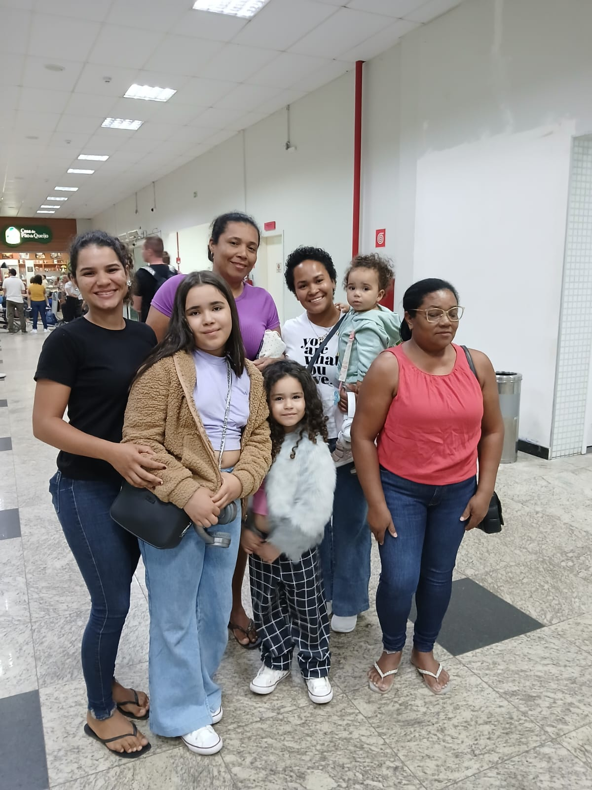
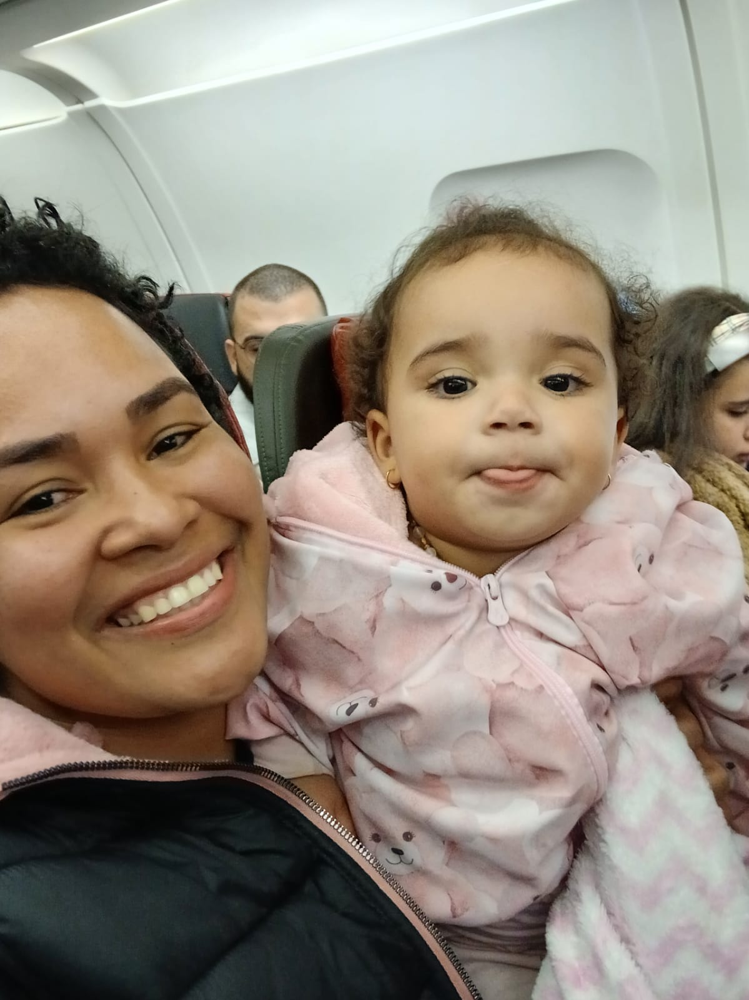

Amo viajar!
Carregando experiências...
Depois de três anos sem ver meus pais, parte da minha família e alguns amigos, resolvi fazer uma viagem surpresa para visitá-los no Pará. Saí de Chapecó às 5h40, com conexão em São Paulo, depois segui para Belém e, por fim, para Marabá, meu destino final.
Os voos ocorreram normalmente no início, mas em Belém a aeronave apresentou problemas e o voo foi cancelado. Eu estava com minhas três filhas e o desespero bateu naquele momento. Fomos para a fila do voucher, e o aeroporto estava cheio de passageiros na mesma situação.
Um funcionário da companhia aérea veio até mim, pediu que eu saísse da fila e me ajudou. Ele entregou um vale para alimentação e organizou tudo para nós. Foi um grande alívio.
Depois de algum tempo, fomos informados que outra aeronave estava disponível e que sairíamos em breve. O alívio foi enorme e agradeci muito a Deus.
Cheguei ao destino por volta da meia-noite. Meus pais ficaram extremamente emocionados. Apesar dos imprevistos, vivi momentos inesquecíveis com minha família.
Visitamos uma praia em Apinajés, com água doce e um lugar muito bonito.
Conheci a Igreja Matriz e visitei cidades vizinhas.
Também tivemos um passeio ao shopping, com direito a compras.










Aprendi que é importante manter a calma em situações difíceis e estar preparado para imprevistos.
Levar uma mala extra com roupas e itens básicos pode fazer muita diferença.
Organizar tudo antes da viagem ajuda a evitar problemas.
O mais importante é aproveitar cada momento e valorizar a família.